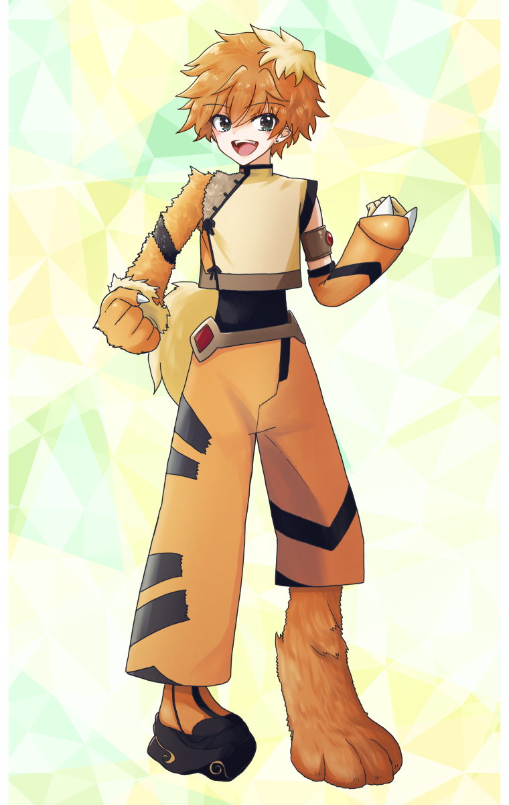

名前
シーヴァ
原型 / 性別
ガlーlデlィ♂
種族
エーデル
所属
学生(騎士見習い)
身長/年齢
150cm/15歳
居住地
海の国【アクアティカ】
一人称 / 二人称
俺 / お前、～さん
参考台詞
「俺は本気だよ。女神に見合う男になってみせる！」
「べんきょーはあんま得意じゃないけど、殴り合いなら負けないぜ！」
「うう……おねえさん……」
女神信仰が強く残るアクアティカ辺境の村出身の少年。
古くから聖獣と結びつきが強く、昔は血を混じ合わせていたというが真偽のほどは定かではない。
しかし村人は、自分たちの祖先は聖獣だったと信じている。
活発で礼儀知らずの田舎者。村で聖獣とともに一生を過ごすと疑いもしていなかったが、ある日、自分よりレベルが上の聖獣の扱い方を誤り、命を落としかける。
その時偶然通りかかった海軍騎士団の女性に命を救われ、自身も騎士を目指すこととなった。
村では反対する者もいたが、腕っぷしには自信があったため、力で強引に反対を押し切って村を飛び出してきた。
今は騎士団寮に併設された騎士の養成所に通っている。
種族的に長命で、声変わりの時期にかかると成長がゆっくりになる。
特例で村の長に認められた者のみ婚礼の儀の際、身体を強化し成長させる炎の石を授かることとなっている。
* RELATIONSHIP *
【恋愛×】【リアクト〇】
その他何でも遊んでください！
キャロ（@りゅーさん）
『うそ……女神……？』
『こないだのお礼にご飯誘ったら来てくれるかなぁ…』
『おねえさんは俺が幸せにする！！』
聖獣に襲われていたところを助けてくれた女性。
あまりの神々しさに一目ぼれした。
仕事でアクアティカに来るたびに約束を取りつけ、猛アタック中。
思い込みが激しいことと会えない時間が長いため、一目ぼれを通り越して若干信仰のようになっている。
一緒についてくるリアクトのペア（拙宅ユエ）のことが非っ常～に気に入らない。
* TIPS *
【アクアジュエル】
左腕。魔法具の腕輪で聖獣に壊されないよう保護しているため、本人にそういう意図は無いものの視認のリスクはあまりない。
見えている石は模造品だが、同じ色の赤い宝石を宿している。
【真名】
マオロンロンデシャオゴーヅー（ふわふわの子犬）
【聖獣】
村から連れてきたゴlルlダlッlク（♂と思っているが♀）の『バフ』に騎乗して移動手段としている。
【バトル】
炎の魔法をまとわせた打撃技が得意。獣の右腕と左足は人間より攻撃力と防御力が強く、ただの刃物程度ならかすり傷にもならない。
* CONTACT *
ＨＮ：黒ばなな
Ｘ：
oxoxoxoxo
【作品置き場】